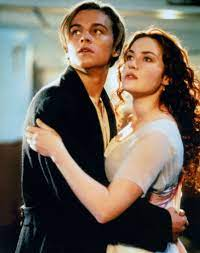
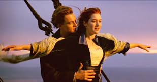
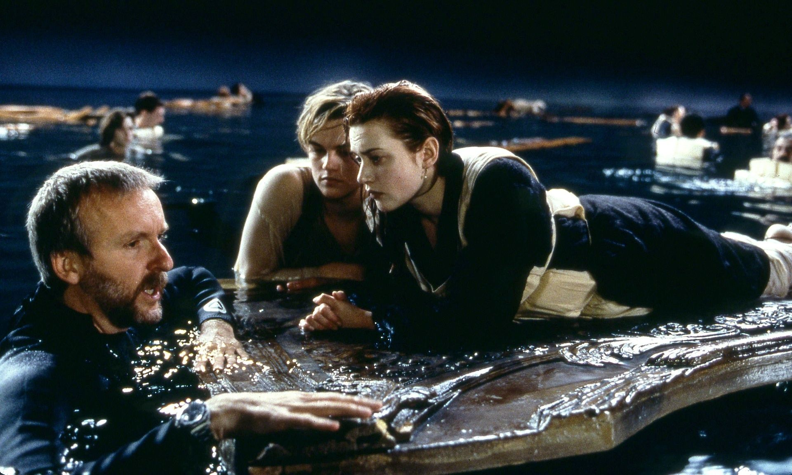
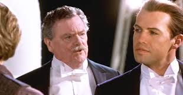

Titanic is an action-packed romance movie created by James Cameron it goes against ill-faited maiden voyage R.M.S Titanic.
The pride and joy of the White Star Line and, at the time, the largest moving object ever built.She was the most luxurious liner of her era the "ship of dreams" which ultimately carried over 1,500 people to their death in the ice cold waters of the North Atlantic in the early hours of April 15, 1912.
   Cast: